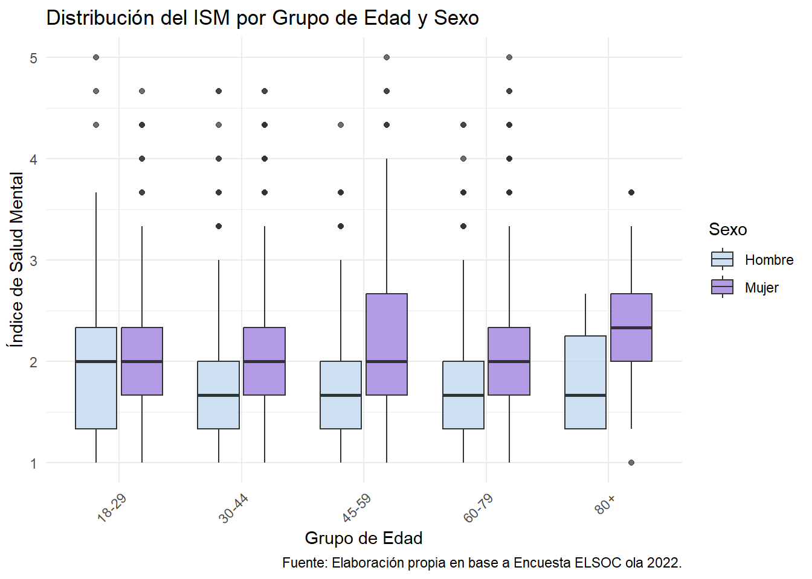
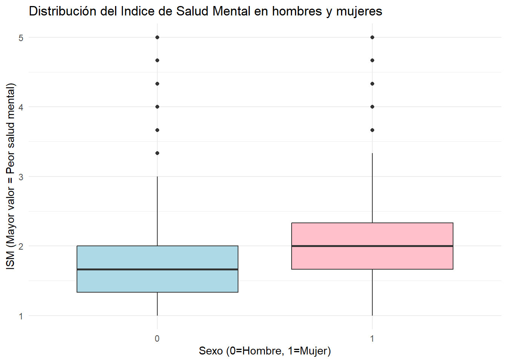

Brechas de género en Salud Mental en Chile: Un análisis bivariado con datos de ELSOC 2022
Estadística Correlacional 2025
Autor/a
Afiliación
Benjamin Bravo, Josefina Bustos, Sofia Holzmann, Kayla Uribe, Tamara Urrutia
Profesor: Juan Carlos Castillo
Apoyo Docente: Kevin Carrasco
Ayudante: Isidora Valencia
Fecha de publicación
23 de noviembre de 2025
1 Introducción
La salud mental según la OMS (s.f.) es un derecho humano fundamental, es un estado de comodidad mental que abre paso a la afrontación cotidiana. Esta es primordial, ya que influye en aspectos a nivel personal, social y socioeconómico. Sin embargo, esto puede manifestarse distinto en hombres y mujeres, por ello es importante reflexionar sobre la existencia de desigualdades en este tópico. El género es relevante en temas de salud mental, puesto que no solo es distinta por factores biológicos, sino que también es desigual, principalmente por la prevalencia de ejes sociales que posicionan a mujeres y hombres en diferentes esferas, lo que afecta en gran medida la vida, el trabajo, la socialización y la salud (Cabezas, 2021).
Por ende, este reporte abordará las brechas de género existentes en la salud mental en Chile utilizando la base de datos ELSOC. La existencia de brechas de género, es una problemática que fluctúa a lo largo del ciclo vital, donde también lo relevante de abordarlo desde el género es poder analizar las relaciones sociales que tienen hombres y mujeres, teniendo en cuenta que esto también define las desigualdades en el ámbito de la salud (Rohlfs et al., 2000)
Bajo esta perspectiva, la problematización recae en esclarecer el comportamiento de esta brecha en el contexto chileno, determinando si existe variación tanto en género como en rango etario. El antecedente general es que las mujeres tienden a presentar una peor salud mental que los hombres, lo que se puede evidenciar en los últimos 20 años donde la brecha de género en la proporción de esperanza de vida sin síntomas depresivos alcanzó 10 puntos de diferencia (Moreno et al, 2024). En este contexto resulta crucial problematizar la interacción entre sexo y edad, y si configura resultados de mayor o menor brecha de género, ya que no es suficiente la diferencia general ya existente. La relevancia de este trabajo, recae sobre la necesidad de generar evidencia que permita una reflexión y posible acción pública. Por ende, es necesario concebir quién se afecta más, y en qué ciclo vital se generan estas brechas. De esta forma, el paso de un diagnóstico general a uno focalizado, permite identificar grupos de riesgo específicos que requieren atención prioritaria, puesto que es importante que la salud no quede ajena a la inequidad de género y que esta realidad se debe tomar en cuenta para el diseño de políticas públicas del área (Presno y Castañeda 2003).
El objetivo es identificar diferencias de género respecto a salud mental a partir del sexo y edad. Por ende, nuestras hipótesis de investigación son; primero, las mujeres presentan peores indicadores de salud mental (valores más altos en ISM) en comparación a los hombres en el tercer tramo de edad (45-59); segundo, los hombres presentan mejores indicadores de salud mental en comparación a las mujeres, es decir, valores más bajos en ISM; y tercero, se espera que tanto mujeres como hombres pertenecientes al segundo tramo de edad (30-44), presenten indicadores similares y bajos de salud mental.
2 Metodología
2.1 Datos
Para este trabajo, se utilizaron los datos del Estudio Longitudinal Social de Chile (ELSOC), una encuesta que evalúa “la manera cómo piensan, sienten y se comportan los chilenos en torno a un conjunto de temas referidos al conflicto y la cohesión social en el país” (COES, s.f.). Con una base de datos de 20.761 observaciones en total, se escoge la ola de 2022 obteniendo un tamaño muestral de 2.730 observaciones.
2.2 Variables
Para comenzar, se seleccionan dos variables del módulo Sociodemográfica. La variable “m0_sexo”, renombrada a “sexo” en el procesamiento de datos, señala el sexo del entrevistado. Es una variable dicotómica donde 1 = hombre y 2 = mujer. En la variable recodificada “R_sexo”, 0 = hombre y 1 = mujer. Es esencial incluirla ya que para la variable dependiente se busca medir brechas de género en salud mental.
La variable “m0_edad”, renombrada a “edad”, señala la edad del entrevistado. Se recodifica creando la variable “edad_tramo_num”. Se divide en 5 tramos etarios (“18-29”, “30-44”, “45-59”, “60-79” y “80+”) que son convertidos a numéricos (1 a 5). Su uso permite introducir el factor de edad a la asociación de género y salud mental.
Luego, se seleccionan 3 variables del módulo Salud y Bienestar, que se utilizarán posteriormente para construir un Índice de Salud Mental (ISM). Primero, “s01”, renombrada a “satisfaccion_vida” mide la satisfacción vital mediante una escala Likert donde 1 = “totalmente insatisfecho” y 5 = “totalmente satisfecho”. Se recodifica creando la variable “R_satisfaccion_vida” para invertir valores a 1 = “totalmente satisfecho” y 5 = “totalmente insatisfecho” y así, mayor puntaje indique peor salud mental. También se convierten los valores [-999 y -888] a NA. Según Veenhoven (1994), esta variable es caracterizada como el nivel de evaluación subjetivo y personal respecto a su vida, es decir si a la persona le gusta la vida que lleva. La satisfacción con la vida es un indicador de calidad de vida, refiere a un estado mental, lo cual va de la mano con la salud mental, puesto que quienes están más a gusto con su vida “también comparten las características de buena salud mental y resistencia psicológica” (Veenhoven, 1994, p.14).
Asimismo, en ELSOC hay una batería de preguntas sobre estado de ánimo para medir sintomatología depresiva, según frecuencia de sensación de síntomas en las últimas dos semanas. De ella, se escogen dos variables ordinales de tipo Likert con los valores 1 = “Nunca” y 5 = “Todos los días”. Se mantienen ya que miden la misma dirección de salud mental que la variable de satisfacción vital.
Las variables escogidas son “s11_02” que mide la frecuencia en que se siente decaimiento, pesadez o desesperanza, y se renombra a “decaimiento_pes_des”; y “s11_04” que mide la frecuencia en que se siente cansancio o sensación de falta de energía, y es renombrada a “cansancio_falta_energia”. Para convertir los valores [-999, -888] a NA, se crean respectivamente “R_decaimiento_pes_des” y “R_cansancio_falta_energia”.
El decaimiento, pesadez, cansancio y la falta de energía guardan estrecha relación con la fatiga emocional, que consiste en sentirse emocionalmente drenado y abrumado debido al estrés acumulado en distintas esferas de la vida, esto ocurre cuando los recursos emocionales se agotan, dejando al individuo incapaz de sobrellevar sus demandas emocionales (Gonçalves, 2025). Esto constituye un fenómeno bastante común, y sus principales síntomas pueden ser; estrés, insomnio, fatiga física (sentirse cansado y con falta de energía), dificultad para concentrarse, entre otros (Bupa Salud, s.f).
Finalmente, se genera un Índice de Salud Mental “ISM” que contempla las variables “R_satisfacción_vida”, “R_decaimiento_pes_des” y “R_cansancio_falta_energia”, y pretende estimar puntajes de salud mental para asociarlo con las variables “R_sexo” y “edad_tramos_num”. Este índice indica que a mayor puntaje, peor salud mental.
Las 6 variables creadas (recodificadas) se almacenan en la base de datos limpia y llamada “datos” que se utilizará para este reporte.
Ver código
# Generar tabla con todos los descriptivos descriptivos <-datos %>% dplyr::select(R_sexo,edad_tramo_num,R_satisfaccion_vida, R_decaimiento_pes_des, R_cansancio_falta_energia)tab1<-psych::describe(descriptivos) %>%kable() %>%kable_styling(full_width =TRUE)tab1
vars
n
mean
sd
median
trimmed
mad
min
max
range
skew
kurtosis
se
R_sexo
1
2730
0.6384615
0.4805341
1
0.6730769
0.0000
0
1
1
-0.5760708
-1.6687533
0.0091969
edad_tramo_num
2
2730
2.9205128
0.9957313
3
2.9858059
1.4826
1
5
4
-0.2546803
-0.8708093
0.0190573
R_satisfaccion_vida
3
2728
2.1330645
0.7901803
2
2.0663919
0.0000
1
5
4
0.8743884
1.0683992
0.0151288
R_decaimiento_pes_des
4
2728
1.7815249
0.9074901
2
1.6181319
1.4826
1
5
4
1.4441954
2.1907220
0.0173748
R_cansancio_falta_energia
5
2728
2.1033724
1.0141733
2
1.9661172
0.0000
1
5
4
1.0658931
0.6949956
0.0194174
Figura 1: Tabla: Resumen de descriptivos de todas las variables
La figura 1 muestra que existe una predominancia de mujeres en la muestra (63.8%) y una distribución equitativa en los tramos de edad. Sobre las variables del Índice, se evidencia una asimetría positiva, es decir tendencia a datos bajos en la muestra, donde satisfacción vida (mean = 2.13), decaimiento (mean = 1.78) y cansancio (mean = 2.1), lo que indica una concentración de la muestra en los valores bajos de salud mental.
2.3 Métodos
En todos los casos, se calcula correlación punto-biserial y se interpreta el tamaño de efecto con los criterios de Cohen (1988).
Para Hipótesis 1, se calcula correlación entre variables “R_sexo” e “ISM” en tramo de 45-59 años, para evaluar si mujeres presentan peores indicadores de salud mental.
Para Hipótesis 2, se calcula correlación entre variables “R_sexo” e “ISM” en muestra completa, para determinar si hombres presentan mejores indicadores de salud mental que mujeres, a nivel general.
Para Hipótesis 3, se calcula correlación entre variables “R_sexo” e “ISM” en tramo de 30-44 años, para evaluar si existen diferencias estadísticamente significativas en salud mental entre hombres y mujeres.
3 Análisis
3.1 Análisis descriptivo
3.1.1 Tablas de contingencia
Se muestran las tablas de contingencia tan sólo para 3 cruces de variables.
Distribución por sexo y edad: En el primer cruce de variables, se observa que el 63.8% de las personas que contestaron la encuesta son mujeres, mientras que el 36.2% son hombres. Esto supone una desproporción importante para tener en cuenta al momento de analizar los resultados de este informe. Asimismo, se presenta como limitación de este.
R_sexo
edad_tramo_num
Total
1
2
3
4
5
0
99 10 % 42.9 %
287 29.1 % 39.2 %
265 26.8 % 31.7 %
326 33 % 36.8 %
10 1 % 22.2 %
987 100 % 36.2 %
1
132 7.6 % 57.1 %
445 25.5 % 60.8 %
570 32.7 % 68.3 %
561 32.2 % 63.2 %
35 2 % 77.8 %
1743 100 % 63.8 %
Total
231 8.5 % 100 %
732 26.8 % 100 %
835 30.6 % 100 %
887 32.5 % 100 %
45 1.6 % 100 %
2730 100 % 100 %
Figura 2: Tabla de contingencia: Sexo y Edad
Salud mental por sexo
Satisfacción con la vida: Ambos sexos presentan mayor frecuencia en el nivel 2, aunque las mujeres muestran menores niveles de satisfacción con la vida que los hombres.
Decaimiento, pesadez o desesperanza: Las mujeres presentan niveles más altos que los hombres en estos síntomas.
R_sexo
R_decaimiento_pes_des
Total
1
2
3
4
5
0
557 56.5 % 46.5 %
350 35.5 % 30 %
42 4.3 % 23.9 %
22 2.2 % 16.2 %
15 1.5 % 29.4 %
986 100 % 36.1 %
1
640 36.7 % 53.5 %
818 47 % 70 %
134 7.7 % 76.1 %
114 6.5 % 83.8 %
36 2.1 % 70.6 %
1742 100 % 63.9 %
Total
1197 43.9 % 100 %
1168 42.8 % 100 %
176 6.5 % 100 %
136 5 % 100 %
51 1.9 % 100 %
2728 100 % 100 %
Figura 3: Tabla de contingencia: Sexo y Decaimiento, Pesadez o Desesperanza
Cansancio o falta de energía: Aunque el nivel 2 predomina en ambos sexos, las mujeres reportan niveles más altos comparado con los hombres.
Patrones por edad
Satisfacción con la vida por tramo etario: En todos los tramos de edad la satisfacción se concentra en el nivel 2, observándose que los tramos de edad 3 (45-59 años) y 4 (60-79 años) presentan los porcentajes más altos en los niveles 4 y 5 de satisfacción.
Decaimiento, pesadez o desesperanza por tramo etario: El tramo de edad 4 (60-79 años) concentra un mayor porcentaje de respuestas en los niveles más altos de decaimiento, pesadez o desesperanza en las últimas dos semanas.
Cansancio o falta de energía por edad: Si bien el nivel 2 predomina en todos los tramos etarios, el tramo 4 (60-79 años) contiene la mayor cantidad de respuestas en los niveles más altos de cansancio o falta de energía.
Relación entre indicadores de salud mental
Satisfacción con la vida y decaimiento: Se observa que a mayor satisfacción con la vida hay menor frecuencia de sentimientos de decaimiento, pesadez o desesperanza, evidenciando una relación inverssa. Lo anterior ya que la mayoría de respuestas se encuentran en el nivel 2 de satisfacción con la vida, y el nivel 2 de decaimiento concentra la mayor cantidad de respuestas.
R_satisfaccion_vida
R_decaimiento_pes_des
Total
1
2
3
4
5
1
283 61.5 % 23.7 %
148 32.2 % 12.7 %
14 3 % 8 %
12 2.6 % 8.8 %
3 0.7 % 5.9 %
460 100 % 16.9 %
2
786 47.3 % 65.7 %
714 42.9 % 61.2 %
90 5.4 % 51.1 %
57 3.4 % 41.9 %
16 1 % 31.4 %
1663 100 % 61 %
3
95 23.7 % 7.9 %
221 55.1 % 18.9 %
42 10.5 % 23.9 %
32 8 % 23.5 %
11 2.7 % 21.6 %
401 100 % 14.7 %
4
30 16.1 % 2.5 %
78 41.9 % 6.7 %
28 15.1 % 15.9 %
32 17.2 % 23.5 %
18 9.7 % 35.3 %
186 100 % 6.8 %
5
2 12.5 % 0.2 %
6 37.5 % 0.5 %
2 12.5 % 1.1 %
3 18.8 % 2.2 %
3 18.8 % 5.9 %
16 100 % 0.6 %
Total
1196 43.9 % 100 %
1167 42.8 % 100 %
176 6.5 % 100 %
136 5 % 100 %
51 1.9 % 100 %
2726 100 % 100 %
Figura 4: Tabla de contingencia: Satisfacción con la Vida y Decaimiento, Pesadez o Desesperanza
Satisfacción vida y cansancio: La mayoría de respuestas se concentran en el nivel 2 de satisfacción con la vida y la mayoría de respuestas de cansancio o falta de energía se concentran en el nivel 2, lo que se interpreta de manera que, a mayor satisfacción con la vida, menor cansancio o satisfacción de vida.
Decaimiento y cansancio: Por último, en este cruce se observa que el nivel 1 de decaimiento, pesadez o desesperanza concentra la mayor cantidad de respuestas y que el nivel 2 de cansancio o falta de energía concentra la mayor cantidad de respuestas, lo que se interpreta de manera que a menor sentimiento de decaimiento, pesadez o desesperanza, menor sentimiento de cansancio o falta de energía tendrá la persona. Se trata de una relación directa.
3.1.2 Índice de Salud Mental
Como se presenta en la figura 5, la matriz de correlaciones entre las 3 variables de salud mental muestra que todas las correlaciones son positivas y estadísticamente significativas (*** = p<0.001, equivalente a un nivel de confianza del 99.9%). Las correlaciones de “R_satisfacción_vida” individualmente con “R_decaimiento_pes_des” por una parte, y con “R_cansancio_falta_energia” por el otro, indican tamaños de efecto moderado y pequeño respectivamente, según los criterios de Cohen (1988). En cambio, la correlación entre estas dos últimas indica un tamaño de efecto grande según los mismos criterios. Para el manejo de valores missing se utiliza el método listwise que es el argumento por defecto ya que sus resultados comparados con pairwise fueron prácticamente idénticos, lo que indica que los missing no introducen sesgos significativos para las correlaciones.
Ver código
# Matriz de correlación entre las 3 variables de salud mentalM_SM <- datos %>% dplyr::select(R_satisfaccion_vida, R_decaimiento_pes_des, R_cansancio_falta_energia)# Visualización amigable y tratamiento NAsjPlot::tab_corr(M_SM,na.deletion ="listwise",triangle ="lower")
R_satisfaccion_vida
R_decaimiento_pes_des
R_cansancio_falta_energia
R_satisfaccion_vida
R_decaimiento_pes_des
0.325***
R_cansancio_falta_energia
0.283***
0.651***
Computed correlation used pearson-method with listwise-deletion.
Figura 5: Matriz de correlación entre las 3 variables de salud mental
Ver código
## Correlaciones positivas y estadísticamente significativas (***), tamaños de efecto 2 correlaciones pequeños y 1 grande, según criterios de cohen# Consistencia interna: Alpha de cronbach alpha_SM <- psych::alpha(M_SM)alpha_SM$total$raw_alpha
[1] 0.691199
El alpha de cronbach (=0.691199) es superior al estándar de 0.6 en ciencias sociales y muy cercano a alcanzar el rango óptimo (>0.7), por lo que se sostiene la consistencia interna aceptable. Entonces, se puede generar el índice.
var
n
NA.prc
mean
sd
range
ISM
2725
0.1831502
2.005749
0.7142294
4 (1-5)
Figura 6: Estadísticos descriptivos del Índice de Salud Mental (ISM)
Los descriptivos del ISM (figura 6) señalan que, con una muestra de 2.725 observaciones, el promedio de salud mental de la población muestral es de 2.01 (sd=0.71). Dado que el mínimo es 1 y el máximo es 5 (y la distribución cubre todo el rango posible) se deduce de la media que la población tiende a tener buena (o moderada) salud mental, considerando estas variables para medir la salud mental. Este dato es importante para considerar en el análisis del ISM promedio por género y tramo de edad, a continuación.
3.2 Análisis Estadístico Bivariado
3.2.1 Promedio ISM por tramos específicos
Ver código
# Ver ISM promedio por sexo dentro de cada tramo de edaddatos %>%group_by(edad_tramo_num, R_sexo) %>%summarise(ISM_promedio =mean(ISM, na.rm =TRUE)) %>%kable() %>%kable_styling(full_width =TRUE)
edad_tramo_num
R_sexo
ISM_promedio
1
0
2.047138
1
1
2.199495
2
0
1.842044
2
1
2.072072
3
0
1.780303
3
1
2.122653
4
0
1.790388
4
1
2.075595
5
0
1.833333
5
1
2.400000
Figura 7: Promedio del Índice de Salud Mental por sexo y tramo de edad
Considerando que el ISM promedio de toda la población es 2.01, tenemos un punto comparativo importante. La figura 7 muestra un patrón consistente en el ISM promedio por sexo segun cada ramo de edad, donde está clara la brecha de género. En todos los casos, las mujeres presentan peor salud mental que los hombres (valores más altos) además de estar siempre, sin importar la edad, por encima del promedio general de salud mental (2.07- 2.40). La situación opuesta ocurre para los hombres, quienes están siempre por debajo del promedio general (1.78-2.05). Asimismo, el ISM más alto para los hombres (2.05) ocurre en el primer tramo de edad, mientras que para las mujeres (2.4) corresponde al último tramo de edad. Además, la mayor brecha de género ocurre en el tramo 80+ con 0.57 puntos de diferencia, no obstante, ello podría deberse a que en la distribución muestral por edad, aquel tramo contiene solo 45 casos.
3.3 Contraste de Hipótesis y tamaños de efecto
3.3.1 Hipótesis 1 (direccional)
Ver código
# Correlación en tramo de edad 45-59h1_data <- datos %>%filter(edad_tramo_num ==3)cor_h1 <-cor.test(h1_data$R_sexo, h1_data$ISM, alternative ="greater") #hipótesis de 1 cola# Formatear resultadosresultados_h1 <-data.frame("Correlación"=round(cor_h1$estimate, 4),"t"=round(cor_h1$statistic, 4),"p-value"="< 0.001***","df"= cor_h1$parameter,"Método"="Pearson's product-moment correlation","Alternativa"="greater","95% IC"=paste0("[", round(cor_h1$conf.int[1], 2), ",", round(cor_h1$conf.int[2], 2), "]"))resultados_h1
H0 = Mujeres 45-59 ≤ Hombres 45-59. Las mujeres pertenecientes al tercer tramo de edad (45-59) presentan mejores indicadores de salud mental o iguales (valores más bajos o iguales en ISM) en comparación a hombres del mismo rango etario.
HA = Mujeres 45-59 > Hombres 45-59. Las mujeres pertenecientes al tercer tramo de edad (45-59) presentan peores indicadores de salud mental (valores más altos en ISM) en comparación a los hombres del mismo rango etario.
Al poner a prueba la hipótesis planteada y evidenciado en la figura 8 adjunta, se logra rechazar la hipótesis nula con un 99.9% de confianza gracias a que el valor p presenta un valor menor a 0,001 evidenciando que dicha relación no se cumple. Así mismo, existe evidencia a favor de la hipótesis alternativa puesto que la correlación muestra un tamaño de efecto pequeño positivo, indicando que va en la dirección planteada y que es estadísticamente significativa (r = 0.2266, p<0.001***). Esto quiere decir que, las mujeres entre 45-59 años (n = 832) presentan una peor salud mental en relación a los hombres del mismo rango etario.
Ver código
# Grafico ISM por sexo y edad ggplot(datos, aes(x =factor(edad_tramo_num, labels =c("18-29", "30-44", "45-59", "60-79", "80+")), y = ISM, fill =factor(R_sexo, labels =c("Hombre", "Mujer")))) +geom_boxplot(alpha =0.7) +scale_fill_manual(values =c("#BCD2EE", "#9370DB")) +labs(title ="Distribución del ISM por Grupo de Edad y Sexo",x ="Grupo de Edad", y ="Índice de Salud Mental",fill ="Sexo",caption ="Fuente: Elaboración propia en base a Encuesta ELSOC ola 2022.") +theme_minimal() +theme(axis.text.x =element_text(angle =45, hjust =1))

Figura 8: Gráfico caja y bigote: Distribución del Índice de Salud Mental por sexo y grupos de edad
3.3.2 Hipótesis 2 (direccional)
Ver código
# Correlación sexo e ISMcor_h2 <-cor.test(datos$R_sexo, datos$ISM, alternative ="greater") #hipótesis de 1 cola# Formatear resultadosresultados_h2 <-data.frame("Correlación"=round(cor_h2$estimate, 4),"t"=round(cor_h2$statistic, 4),"p-value"=ifelse(cor_h2$p.value <0.001, "< 0.001***", round(cor_h2$p.value, 4)),"df"= cor_h2$parameter,"Método"="Pearson's product-moment correlation","Alternativa"="greater","95% IC"=paste0("[", round(cor_h2$conf.int[1], 2), ",", round(cor_h2$conf.int[2], 2), "]"))resultados_h2
H0 = Hombres ≥ Mujeres. Los hombres presentan peores o iguales indicadores de salud mental en comparación a las mujeres, es decir, valores más altos en ISM.
HA = Hombres < Mujeres. Los hombres presentan mejores indicadores de salud mental en comparación a las mujeres, es decir, valores más bajos en ISM.
Al poner a prueba la hipótesis planteada, se rechaza la hipótesis nula con un 99.9% de confianza gracias a que el valor p presenta un valor menor a 0,001 evidenciando que dicha relación no se cumple. Asimismo, existe evidencia a favor de la hipótesis alternativa, puesto que hay una diferencia estadísticamente significativa (p<0.001***) dentro del ISM, con una correlación positiva (r = 0.1864) entre el sexo y el nivel de salud mental que presentan las personas, con un tamaño de efecto pequeño según los crietrios de Cohen. Esto quiere decir que, tal como se observa en la figura 9 los hombres presentan mejores indicadores de salud mental en comparación a las mujeres.
Ver código
ggplot(datos, aes(x =factor(R_sexo), y = ISM)) +geom_boxplot(fill =c("lightblue", "pink")) +labs(title ="Distribución del Indice de Salud Mental en hombres y mujeres",x ="Sexo (0=Hombre, 1=Mujer)", y ="ISM (Mayor valor = Peor salud mental)") +theme_minimal()

Figura 9: Gráfico caja y bigote: Distribución del Índice de Salud Mental por sexo
3.3.3 Hipótesis 3 (no direccional)
Ver código
# Correlación en tramo de edad 30-44h3_data <- datos %>%filter(edad_tramo_num ==2)cor_h3 <-cor.test(h3_data$R_sexo, h3_data$ISM, alternative ="two.sided") #hipótesis de 2 colas# Formatear resultadosresultados_h3 <-data.frame("Correlación"=round(cor_h3$estimate, 4),"t"=round(cor_h3$statistic, 4),"p-value"=ifelse(cor_h3$p.value <0.001, "< 0.001***", round(cor_h3$p.value, 4)),"df"= cor_h3$parameter,"Método"="Pearson's product-moment correlation","Alternativa"="two.sided","95% IC"=paste0("[", round(cor_h3$conf.int[1], 2), ",", round(cor_h3$conf.int[2], 2), "]"))resultados_h3
H0 = Mujeres 30-44 = Hombres 30-44. Tanto mujeres como hombres pertenecientes al segundo tramo de edad presentan indicadores iguales y altos en salud mental.
HA = Mujeres 30-44 ≠ Hombres 30-44. Tanto mujeres como hombres pertenecientes al segundo tramo de edad (30-44) presentan indicadores similares y bajos en salud mental.
Al poner a prueba la hipótesis planteada, se muestra una diferencia estadísticamente significativa, con un valor p menor a 0,001, siendo posible rechazar la hipótesis nula que postula indicadores iguales y altos en salud mental entre individuos de 30-44 años. Sin embargo, el tamaño de efecto de la correlación (r = 0.1613) es positivo pero pequeño, evidenciando que a nivel poblacional esta relación es muy pequeña. Por otro lado, en relación a los datos, las mujeres y hombres pertenecientes al segundo tramo de edad (30-44) presentan diferencias significativas entre ambos y específicamente en dicho tramo presentan una baja considerable de la salud mental, como puede verse en el gráfico adjunto.
Ver código
# Heatmap para ISM respecto edad y sexo ## Calcular medias por grupo heatmap_data <- datos %>%group_by(edad_tramo_num, R_sexo) %>%summarise(media_ism =mean(ISM, na.rm =TRUE),n =n(),.groups ='drop' ) %>%mutate(grupo_edad =factor(edad_tramo_num, labels =c("18-29", "30-44", "45-59", "60-79", "80+")),sexo =factor(R_sexo, labels =c("Hombre", "Mujer")) )#Generar Heatmap ggplot(heatmap_data, aes(x = grupo_edad, y = sexo, fill = media_ism)) +geom_tile(color ="white", linewidth =1) +geom_text(aes(label =round(media_ism, 2)), color ="black", size =4) +scale_fill_gradient2(low ="red", mid ="white", high ="blue", midpoint =mean(heatmap_data$media_ism),name ="ISM (Media)") +labs(title ="Mapa de Calor: ISM Promedio por Edad y Sexo",x ="Grupo de Edad", y ="Sexo",caption ="Fuente: Elaboración propia en base a Encuesta ELSOC ola 2022.") +theme_minimal()
Figura 10: Mapa de calor: ISM Promedio por edad y sexo
4 Conclusión
El presente trabajo tuvo por objetivo analizar las brechas de género en la salud mental en Chile, estudiando fluctuaciones en la brecha según rangos etarios a partir de los datos de la encuesta ELSOC. Los resultados muestran evidencia en que la salud mental es más baja en mujeres que en hombres dentro de todos los rangos etarios presentados, puesto que los indicadores del Indice creado muestran valores más altos (peor salud mental) para las mujeres. Aquello evidencia que la edad no es un factor determinante a la hora de analizar la salud mental en Chile.
Este trabajo presenta limitaciones a la hora del análisis en materia de representatividad, ya que existe un desbalance de género en la muestra, donde las mujeres duplican la participación de hombres en esta encuesta. Esto en particular evidencia una gran diferencia en resultados a la hora de evaluar los niveles de salud mental, pero dicho resultado podría estar alterado por la gran cantidad de mujeres presentes siendo posible que no sea una diferencia real a nivel poblacional.
Se debe tener en cuenta para futuros análisis respecto a esta temática, que es importante incorporar variables que expliquen por qué se producen estas diferencias, como por ejemplo: “horas dedicadas al trabajo doméstico” o “carga de cuidados”. En este sentido, sería un gran aporte realizar estudios longitudinales que permitan evidenciar cómo se comporta la salud mental en una misma población a lo largo del tiempo, y cómo transita dicha población en sus diferentes etapas del ciclo vital; de la juventud a la adultez, de la adultez a la tercera edad, etc…, verificando si dicha brecha corresponde al rango etario o a efectos generacionales.
5 Bibliografía
Beltrán, L. et al (2020). Medición del Bienestar Subjetivo y Condiciones de Vida en el contexto sociocultural de la contingencia por COVID en Veracruz, México. Revista Electrónica de la Coordinación Universitaria de Observatorios de la Universidad Veracruzana, (10) 94-103. https://doi.org/10.25009/uvserva.v0i10.2727
COES (2023). Radiografía del Cambio Social: Análisis de Resultados Longitudinales ELSOC 2016-2022. Presentación de Resultados COES.
Gonçalves, S. (2025). Understanding emotional fatigue: A systematic review of causes, consequences and coping strategies. Enfermería Clínica (English Edition), 35(5), pp 1-19.
Moreno, X., Monsalves, MJ, Rueda, S., Dagnino, P. y Borghero, F. (2024). Diferencias de género en la esperanza de vida sin síntomas depresivos en Chile entre 2003 y 2016. Cambridge Prisms: Salud Mental Global, 11, e16. https://doi:10.1017/gmh.2024.9
Presa-García, ME, García-Luque, A, Luis Callol-Sánchez, L, Abril-García, A, & Muñoz-Lucas, MA. (2023). Influencia de la anhedonia en la evolución clínica del trastorno depresivo. Sanidad Militar, 79(2), 75-81.
Rohlfs, I., Borrell, C., Anitua, C., Artazcoz, L., Colomer, C., Escribá, V., García-Calvente, M., Llacer, A., Mazarrasa, L., Pasarín, M. I., Peiró, R., & Valls-Llobet, C. (2000). La importancia de la perspectiva de género en las encuestas de salud. Gaceta Sanitaria, 14(2), 146-155. https://doi.org/10.1016/S0213-9111(00)71448-8